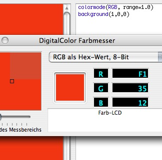

Hi,
NodeBox by default uses calibrated colors to provide correct print behaviour.
That said, you can change the behaviour by using the following script. Note that this is sort of hacky: it changes the internal behaviour of scripts, and the functionality is available to every script until you quit NodeBox.
Have fun,
Frederik
# This code allows you to use true, device-native red/green/blue values, # instead of the default calibrated values. # Because this script essentially rewires some of the internal NodeBox code, # it changes the behaviour of *all* open scripts! # Use with care! size(500, 500) import DrawingPrimitives def _newset(self): # Stored internally is the _rgb code with as a calibrated red/green/blue pair. # The components still have their native values, however, so we use those # to construct a new color. from AppKit import NSColor r = self._rgb.redComponent() g = self._rgb.greenComponent() b = self._rgb.blueComponent() a = self._rgb.alphaComponent() clr = NSColor.colorWithDeviceRed_green_blue_alpha_(r, g, b, a) clr.set() # This line replaces the old definition of with our _newset method. DrawingPrimitives.Color.set = _newset # All commands accepting red/green/blue values have their behaviour changed. background(0, 0, 0) # Filling squares using pure red/green/blue. fill(1, 0, 0) rect(100, 0, 100, 500) fill(0, 1, 0) rect(200, 0, 100, 500) fill(0, 0, 1) rect(300, 0, 100, 500)
Thanks.... ^^
Hi,
Thanks Frederik, this does help me partially too. However, it seems to have no effect on text written to the canvas, it appears in the same faded set of colours.
Would be really great if there was some kind of colour command to toggle off this effect - I'm not really sure why it is the default behaviour. I do use colour profiles and colour correction in PhotoShop quite a bit, so I thought I would have some insight into this issue - but the colours I get in pdfs from NodeBox don't yet match any other documents I create on my system.
Any hints on correcting images out of NodeBox would be much appreciated. I was hoping the ColorSync Utility would allow me to manually apply a correct colour profile, but no luck there yet either :-(
Hi Gary,
NodeBox creates PDF documents in Device CMYK, which is good enough to certify the PDF's in Acrobat and commit them to press without too many difficulties.
ColorSync is much more complex to implement. We currently don't have that kind of integration... perhaps it's even beyond the scope of the NodeBox project.
With a bit of juggling you should be able to assign the profile you want in Illustrator.
Still, here is an even bigger hack to work with Calibrated RGB in NodeBox, it handles text color as well:
_colorspace = CMYK def colorspace(space): global _colorspace _colorspace = space def _set(self): if _colorspace == CMYK: self._cmyk.set() else: self._rgb.set() import DrawingPrimitives DrawingPrimitives.Color.set = _set def fill(*args): if _colorspace != CMYK: try: return _ctx.fill(args[0]._rgb) except: pass return _ctx.fill(args) def stroke(*args): if _colorspace != CMYK: try: return _ctx.stroke(args[0]._rgb) except: pass return _ctx.stroke(args) def text(txt, x, y, width=None, height=None, outline=False, draw=True): txt = _ctx.text(txt, x, y, width, height, outline, draw) if _colorspace != CMYK: try: txt.fillcolor._cmyk = txt.fillcolor._rgb except: pass return txt ######################################################################## # Your script starts here. Notice the colorspace() command that switches # between CMYK and RGB colors. colorspace(RGB) fill(1,0,0) rect(0,0,100,100) c = color(1,0,0) fill(c) stroke(0,1,0) strokewidth(10) rect(105,0,100,100) #nofill() text("hello", 100, 105)

100% Red Color don't display...
Posted by sillabub on May 14, 2007
100% Color (example... my image...) don't display.
Red, Black, Blue... also...
I was test color in photoshop for my computer (MacBookPro).
But other program was normal.
Only NodeBox is wrong...